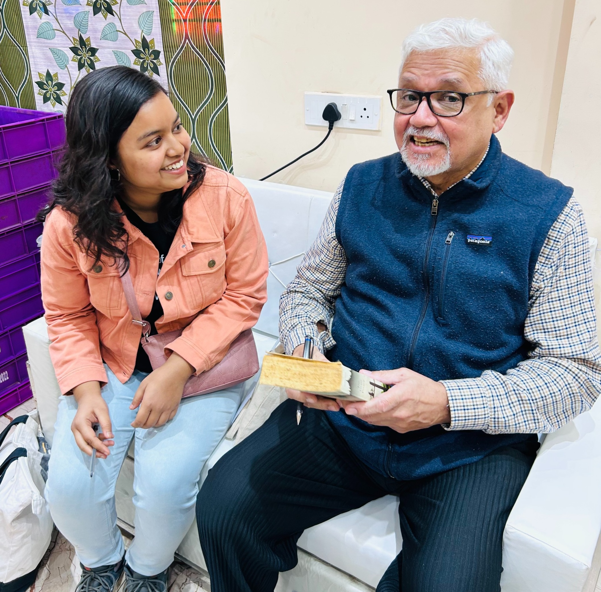
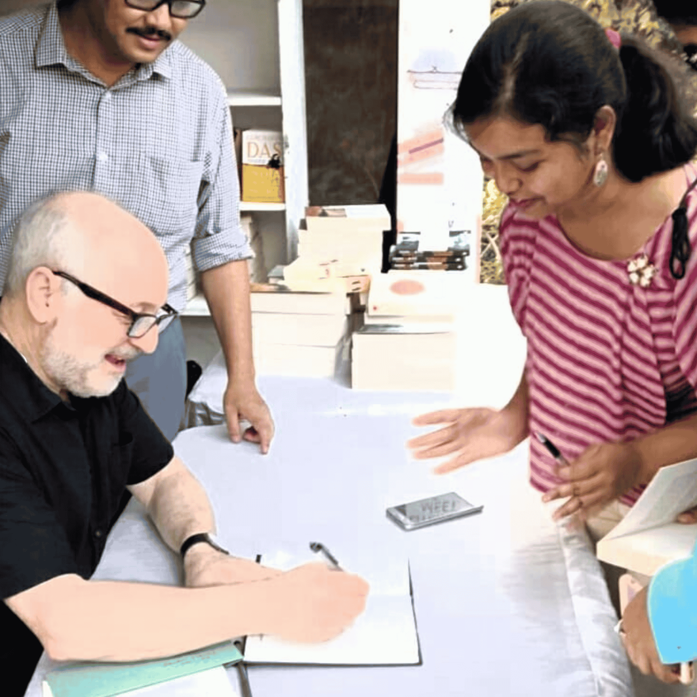
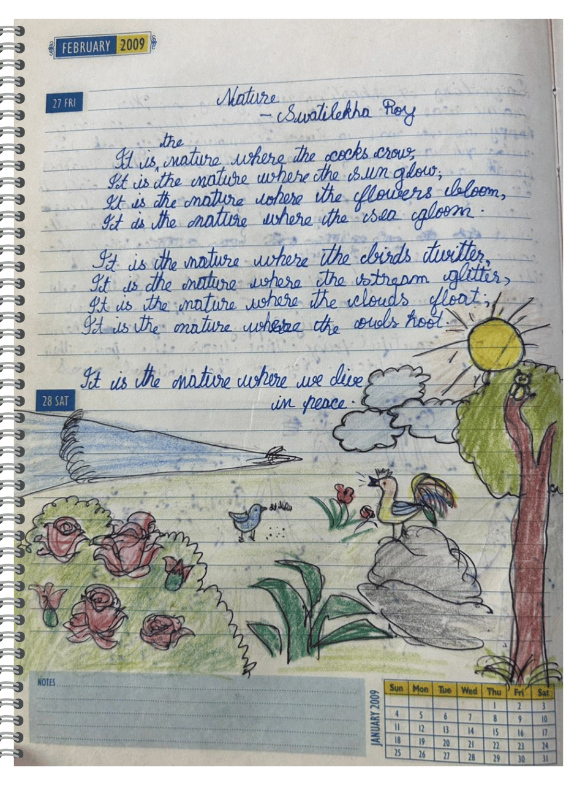

Creative Journey
Ever since I read Rabindranath Tagore's কাবুলিওয়ালা (later revisited
many times as an adult), I felt... something.
Deep within me: an urge to create a world only I could see.
The young boy's journey to the unknown in Ruskin Bond's "How Far is
the River" was the final push I needed to write my first poem,
'Nature'. Ever since, I've lived as a creative, with intermittent
seasons of block and mist. I started with writing, but have found
childish joy in different art forms: through pastel, the camera lens,
or film.
Retrospective

Meeting the human who brought the heart of Kolkata storytelling to a global stage was a religious experience. And getting my library book (never returned) signed by Shree Amitav Ghosh.

Somewhere in
northern Italy
southern Kolkata, getting my journal signed by
André Aciman.
Of course, I brought up his email from the year before. :)
Manifestation.

As you can very well see,
I was no childhood prodigy;
Just a girl, delusionally non-self-conscious,
Ready to take on the whole wide world.
"You can't use up creativity. The more you use, the more you have." - Maya Angelou